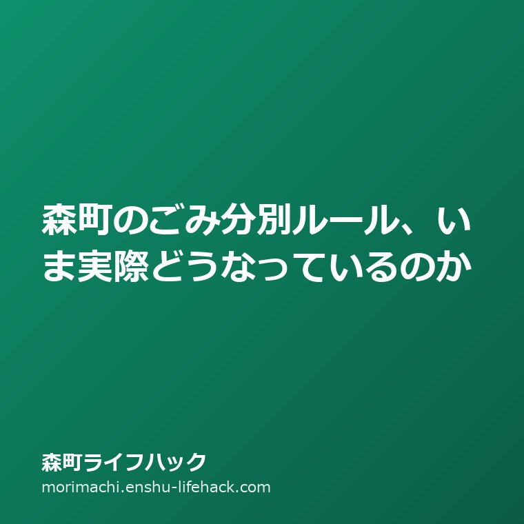

森町のごみ分別ルール、いま実際どうなっているのか

この記事の要点
Q. 森町のごみ分別ルールは、もう変わったのですか？
A. 静岡県周智郡森町（遠州森町）では、令和8年（2026年）4月1日からのごみ分別ルール変更にともなう分別ガイドブックの改訂作業が進められている、と町公式ページに記載されています（2026年8月4日確認）。改訂後の分別区分がすべて確定・周知されたという告知は、同ページ上では確認できませんでした。そのため手元の分別表が最新かどうかは、公式ページか住民生活課 生活環境係（0538-85-6314）で確認するのが確実です。日々の分別で迷ったときは、品目名から引ける町公式の「家庭ごみの出し方ナビ」が使えます。
「4月から分別が変わるらしい」という話は、森町にお住まいの方なら一度は耳にしたことがあるはずです。ただ、実際に今どうなっているのかは、意外とはっきりしません。この記事では、町公式ページに書かれていることだけを根拠に、現状を整理します。
町公式ページに書かれていること
森町の「家庭ごみの分別表・収集カレンダー」のページには、次の趣旨の記載があります（2026年8月4日確認）。
現在、町では令和8年4月1日からのごみ分別ルールの変更にともなう改訂作業を進めています。
ここから読み取れるのは、①ルール変更の基準日として令和8年4月1日が示されていること、②分別ガイドブックの改訂作業が「進行中」と書かれていることの2点です。
一方で、この記載は令和8年4月1日を過ぎた時点でも残っています。改訂作業が続いているのか、作業は終わったが記載が更新されていないのかまでは、ページの文面からは判断できません。本サイトでは「変更済み」とも「まだ変わっていない」とも断定しません。暮らしに直結する情報を推測で書くと、かえって混乱を招くためです。
では、いまどうすればよいか
実務的には、次の順番で確認するのが確実です。
- 品目で迷ったら「家庭ごみの出し方ナビ」で引く。キーワード検索と50音検索ができ、町公式が運用しているため、分別表の版が古くてもこちらが基準になります。
- 手元の分別表・カレンダーの版を確認する。全戸配布のほか役場でも配架されています。いつ配られたものか分からない場合は、公式ページのPDFと見比べます。
- それでも判断がつかない品目は電話で聞く。住民生活課 生活環境係 0538-85-6314。改訂の具体的な内容についても、この窓口が案内先として案内されています。
外国籍のご家族・ご近所の方には多言語版を
森町の分別ガイドブックは、英語・中国語・ポルトガル語・ベトナム語・クメール語に対応しています。遠州地域は外国人住民の比率が高く、ごみの分別は最初につまずきやすいところです。「日本語の紙は届いているが読めない」という状況は珍しくないため、多言語版があること自体を伝えるだけでも助けになります。
あわせて、町は「外国人町民のための生活ガイドブック」も公開しています。
粗大ごみは町の収集ではない
分別ルールとは別に、森町でつまずきやすいのが粗大ごみです。森町では粗大ごみの戸別収集を行っておらず、中遠広域粗大ごみ処理施設（磐田市新貝）への直接搬入が基本になります。手数料は車両の最大積載量により520円〜2,090円です。
実家の片づけや引っ越しでまとまった量が出るときは、この前提を知らないと段取りが崩れます。搬入できる品目と時間帯を、先に確認しておくのが安全です。
大石の視点
暮らしのルールが切り替わる時期は、「前にこうだった」だけでも、「これからこうなるらしい」だけでも判断しないことが大切です。町の案内に更新途中の記載があるなら、分かった範囲と分からない範囲を分け、最後に公式ナビや担当窓口までたどれるようにする。それが、地域の情報を扱う側の役割だと考えています。
まとめ
- 令和8年4月1日を基準日とするルール変更にともなう改訂作業が進行中、と公式に記載されている（2026年8月4日確認）
- 改訂の完了・周知を示す告知は同ページ上では確認できず、本サイトでは断定しない
- 迷ったら「家庭ごみの出し方ナビ」→ 手元の分別表 → 生活環境係（0538-85-6314）の順で確認する
- 多言語版のガイドブックがある。粗大ごみは町の収集ではなく直接搬入
参考にした公式情報
- 家庭ごみの分別表・収集カレンダー／静岡県森町（改訂作業に関する記載を2026年8月4日に確認）
- 家庭ごみの出し方ナビ／静岡県森町
- 粗大ごみの出し方／静岡県森町
- 外国人町民のための生活ガイドブック／静岡県森町
最終確認日：2026-08-04 ／ 本記事は公表情報を整理したものです。分別区分の最新・正確な情報は必ず森町公式ページまたは住民生活課 生活環境係でご確認ください。